Dialogs, Editors, and Views |
| New Layout Spy Tool |
PDE has added a new tool for debugging SWT layouts. To activate it, use the
shortcut Ctrl+Alt+Shift+F9 from any window.
Usage:
- Click Select Control then click the control you want to inspect
- Enable Show Overlay and navigate the widget hierarchy until you find a
control whose boundary is correct (the red rectangle) and whose child's boundary
is incorrect (the yellow rectangle).
- Look at the results of computeSize. If the result of computeSize is correct,
the problem is in the parent layout or its attributes. Otherwise the problem
is in the child widget.
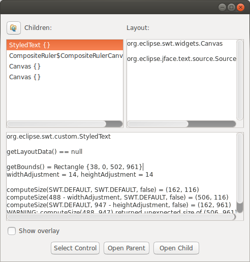
|
| Support for Nested categories |
You can now organize features into hierarchies by using the nested categories support in the Category Definition editor.
The created definition can be used as input for the Categorize repository parameter in the Options tab of File > Export... > Deployable features wizard.
They are also visible in the Install dialog.
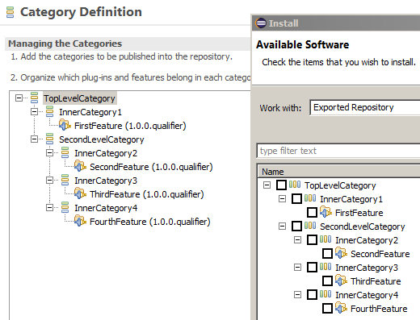
|
| Manage versions for included features |
The PDE Feature editor now allows you to manage versions for included features (previously this was possible for included plug-ins only).
In the Included Features tab, a new Versions... button has been added, which allows you to synchronize the current feature with
actual versions of included features, or sets included feature versions to be synchronized on build.
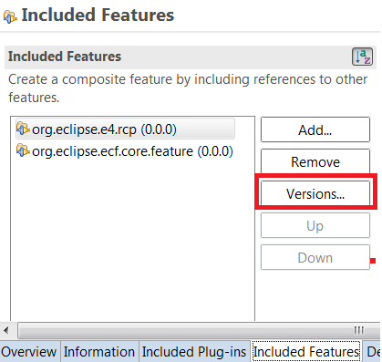
|
| Option added for workspace plug-ins overriding target plug-ins |
A new option to specify if workspace plug-ins should override target platform plug-ins with the same id has been
added on the Plug-in Development preference page.

This option is enabled by default. When it's disabled, all plug-in versions from the workspace and target platform will
be used and the best available plug-in for a plug-in id will be chosen.
|
| 'Show In Console' added to context menu of Error Log view |
In the Error Log view, the context menu now includes Show In Console, which performs the same
action as Show Stack Trace in Console View from the view toolbar.
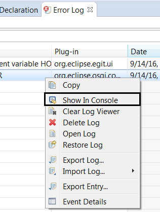
|
| Reload Target Editor |
When a target platform is already active, the Target Editor now shows a Reload Target Platform link instead of Set Active Platform.
The reload link has the same effect as clicking the Reload button in the Plug-in Development > Target Platform preference page.
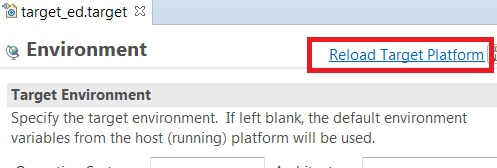
If the .target file has been modified, clicking the
link will now ask you to save the target editor and then reload the target.
|
| Target definition files can be edited with the Generic Editor |
The Generic Editor has been extended to enable it to edit target definition files (.target files). It supports syntax highlighting for the most used keywords.
It also supports content assist for tags and their attributes, installable units for a given repository, and the available versions for a given installable unit.
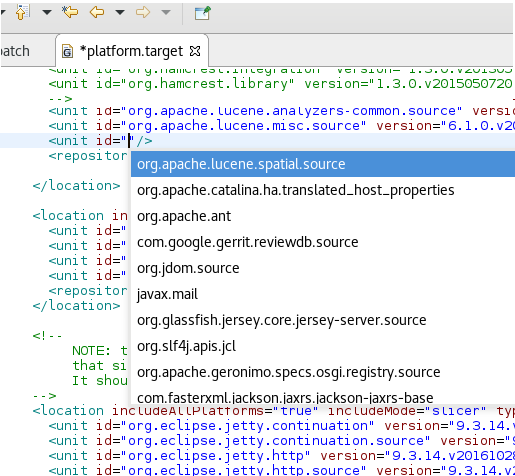
|
| p2.inf files open in Properties Editor |
The Properties File Editor is now the default editor associated with p2.inf files.
|
| Search finds plug-in references in features |
Search > Plug-ins... that finds references to a plug-in now also finds references to a plug-in in features.
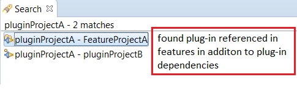
|
| Quick Fix to add bundle or package adds import statement |
The Quick Fix that adds an Import-Package or Require-Bundle dependency
in the MANIFEST.MF now also adds the relevant import statement for the unresolved type in the Java editor.
|
| Validate launch configuration activated by default |
When you create a new Eclipse Application launch configuration, PDE will now by default enable the option to
Validate Plug-ins automatically prior to launching.
This helps identify missing plug-in dependencies before the start of the application and makes it easier for new plug-in
and RCP developers to identify common problems.
This validation can be disabled in the Plug-ins tab of the launch configuration dialog.
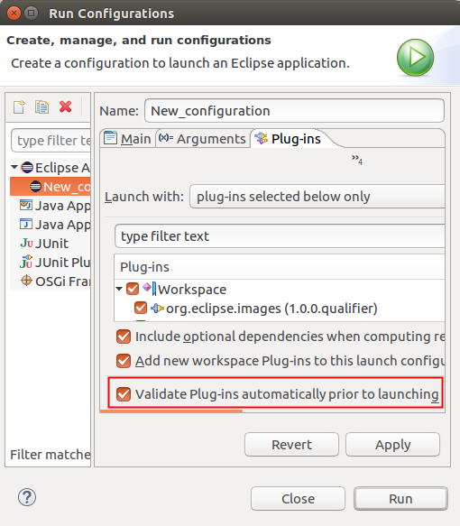
|
| 'Restore to defaults' buttons added to Tracing tab |
In the Tracing tab of the launch configuration dialog, new options to Restore Selected to Defaults
and Restore All to Defaults have been added.
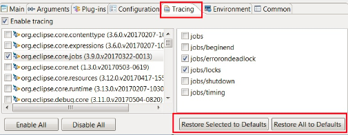
|
OSGi Declarative Services |
| Support for Declarative Services Annotations v1.3 |
Version 1.3 of OSGi Declarative Services delivers a number of improvements, including
Component Property Types for strongly-typed configuration parameter handling,
Field Strategy for dependency injection, service/reference scoping, and others.
PDE now supports the enhanced annotations and new usage options. It generates component
properties from any Component Property Types that you may use in your component lifecycle
methods. It also creates reference entries from @Reference annotations
specified directly in @Component as well as annotated member fields. New
reference event method signatures are also supported.
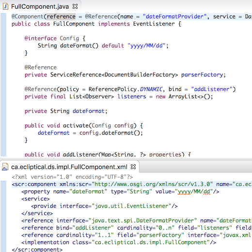
To enable this feature, go to Preferences or Project Properties > Plug-in Development > DS Annotations
and check Generate descriptors from annotated sources.
|
Wizards |
| Plug-in project template added for Generic Text Editor |
A plug-in project template has been added to show off the new extensible generic editor functionality. It will kick-start you with a sample .target file editor with syntax highlighting.
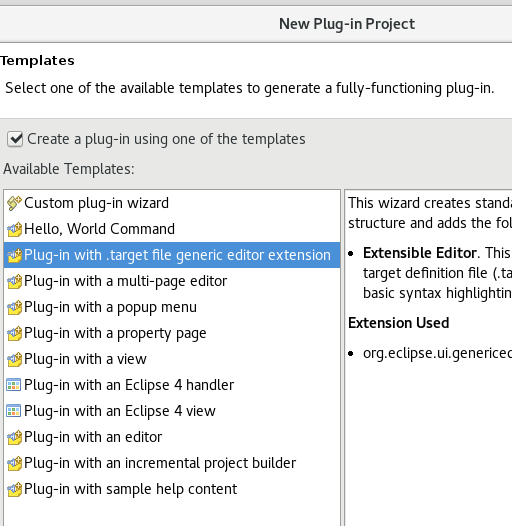
|
| More descriptive plug-in template names |
The template name for plug-ins have been modified to be more descriptive.
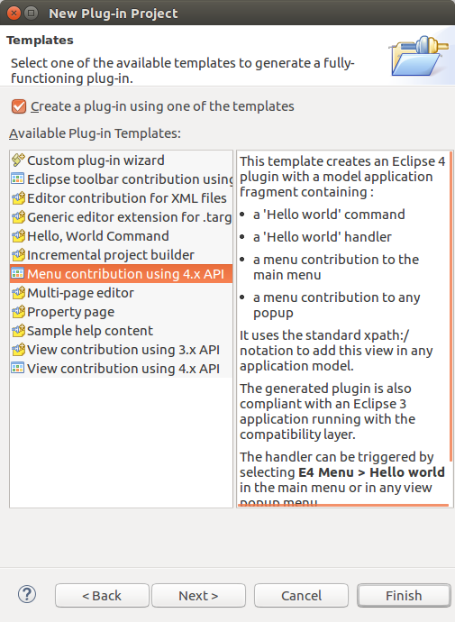
|
| Plug-in selection filter in Feature project wizard |
You can now use a text filter when selecting plug-ins in the New > Feature Project wizard.
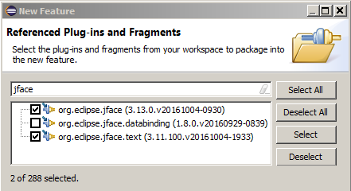
|
| Filter in plug-in and feature export wizards |
You can now use a text filter when selecting plug-ins in the Export.. > Deployable plug-ins and fragments or
features in the Export.. > Deployable features wizards.

|
API Tools |
| Change in Execution Environment creates a version problem |
Changing the Execution Environments in a plug-in now creates a problem marker indicating that the minor version should be increased. This happens
if the minor version is not already increased with respect to the baseline.
The preference to control the severity of this problem is located in
the Version Management tab of the Plug-in Development > API Errors/Warnings preference page.
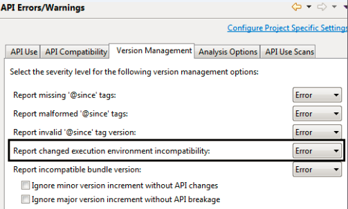
|
| Default method addition reported as a breaking change |
The API Tools now reports the addition of a default method in an API interface that can be implemented by
clients as a
breaking change.
On the Plug-in Development > API Errors/Warnings preference page in the API Compatibility tab,
there is a new option in the Interface section to configure the severity of a "default method addition" API change.
By default, this option is set to "Error" because adding the same method in multiple interfaces can break
existing clients at run time (JLS8 13.5.6).
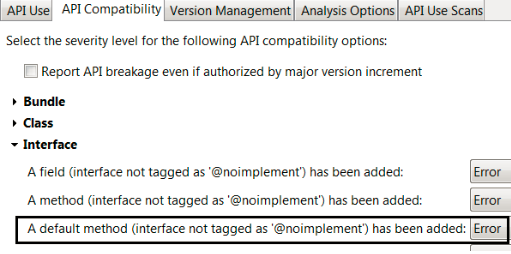
|
| Field addition to Class reported as a breaking change |
The API Tools now reports the addition of a field to a Class that is extendable by clients as a breaking change.
On the Plug-in Development > API Errors/Warnings preference page in the API Compatibility tab,
there is a new option in the Class section to configure the severity of a "field addition to class".
Also, there is a new link at the top of API Compatibility tab that has more details on achieving API binary compatibility.
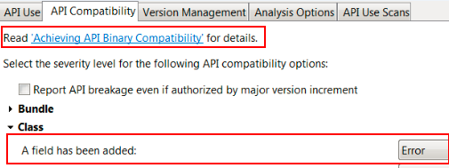
The field addition error has a Quick Fix that opens help to explain the incompatibility in greater detail.
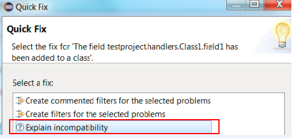
|
| Option for field addition to an annotation |
On the Plug-in Development > API Errors/Warnings preference page in the API Compatibility tab,
there is a new option in the Annotation section to configure the severity of a "field addition to annotation".
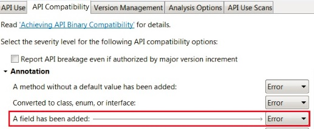
|
Types marked with @noimplement and @noextend processed by API leak analysis |
Extending or implementing an interface marked as @noimplement is now reported as an API leak. This is because
adding a field or method to the interface marked as @noimplement may break a client that is using
the extended or implemented type.
Also, extending a type marked as @noextend is now reported as an API leak. This is because it may indirectly
leak API types if the extended type is further extended by the client.
Some of the new kinds of leak warnings are shown below:
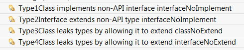
|
| Quick Fix to configure problem severity |
You can now configure the severity of an API Tools problem or a PDE compiler problem by invoking the new Quick Fix (Ctrl+1).
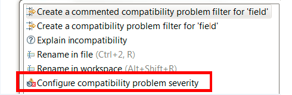
For API tools problems, the Quick Fix will open the Plug-in Development > Errors/Warnings
preference page and highlight the configurable problem.
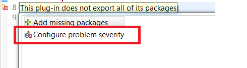
For PDE compiler problems, the Quick Fix will open the Plug-in Development > Compilers
preference page and highlight the configurable problem.
|
| Reorganized Version Management preferences tab |
The Version Management tab of the Plug-in Development > API Errors/Warnings preference page has been
reorganized as shown below:
-
The sub-options to control major/minor version change without API breakage/changes have been converted into normal options
and they are set to warning by default.
-
The option 'Report changed execution environment incompatibility' has been moved
to the bottom of the tab.
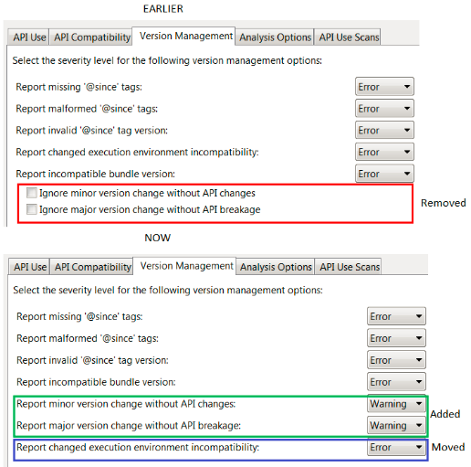
|